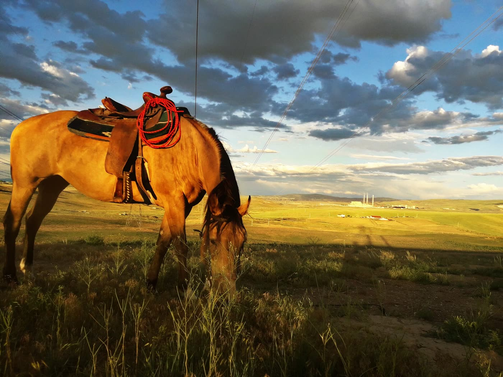

Craig, Moffat County
Woodbury Park
Woodbury Park is the City of Craig sports park that the town uses for baseball, open play, and a picnic. The entrance is on W. 2nd Street and Mack Lane. More parking runs along W. 3rd Street. On the grounds you get three baseball diamonds with backstops and above-ground dugouts, multi-use fields, a playground, seasonal restrooms, a covered picnic area, landscaping, and outdoor pickleball courts. Pickleball is the newest piece the parks department lists.
West side of CraigW. 2nd Street and Mack LaneCraig, Colorado 81625. Extra parking on W. 3rd Street.What is in the park Back to Colorado
- Entrance
- W. 2nd Street and Mack Lane. Additional parking along W. 3rd Street. Pin 40.50872, -107.56576.
- Ball fields
- Three baseball diamonds, backstops, above-ground dugouts, and multi-use fields.
- Play
- Playground, outdoor pickleball courts, covered picnic area, seasonal restrooms, landscaping.
- Rentals
- Craig Parks and Recreation, (970) 826-2029. City Hall, 300 West 4th Street, (970) 826-2000.
- County
- Craig is the seat of Moffat County. Loudy Simpson Park is a separate county place the city uses for some programs.
A practical visit
Come in from W. 2nd Street at Mack Lane if you want the main drive. If that lot is full on a game night, the city also marks parking along W. 3rd Street. The diamonds are the reason a lot of Craig families know the park. Three backstops, dugouts built above ground, and multi-use fields mean a practice can spill off the dirt and onto the grass without leaving the property. The playground is the stop for younger kids while a game is on. The covered picnic area is the shelter to ask about if you want a birthday or a team meal out of the wind.
Restrooms are seasonal. In a northwest Colorado spring they may still be locked when the fields are soft, and in late fall they close before the last warm Saturday. Call (970) 826-2029 before you promise a group that the building will be open. That same number is the city's line for rental information on any city park, not only Woodbury. City Hall is at 300 West 4th Street, Craig, Colorado 81625, and the main city phone is (970) 826-2000.
Pickleball is the most recent improvement the parks page names. The courts are outdoors. Bring your own paddles and a ball, and yield the court if a posted rule or a city program has the hour. The department runs programs in more than one building: city parks, the Boys and Girls Club, Loudy Simpson Park, and Moffat County School District gyms. A flyer that says Craig Parks and Recreation is not always a flyer for this lawn.
Hours can differ from one Craig park to another. Read the sign at the Woodbury entrance when you arrive, and use the parks phone if you are planning a rental around closing. On an ordinary afternoon the useful plan is simple: park on 2nd or 3rd, walk the playground and the courts, and leave the diamonds clear if a team is on them.

Craig, the town around the fields
Craig is the county seat of Moffat County, on the Yampa River in northwest Colorado. Woodbury sits on the west side of that town, a sports complex rather than a downtown square. The photograph here is the city from a trail ride, not a picture of the diamonds. Use it to place the park: a small city with open country around it, and a ballpark that carries a lot of the youth sports calendar.
Craig, Colorado, from a trail ride. Photograph by Randie Craft, CC BY-SA 4.0. The image is the town, not Woodbury Park.

How the park was built, and rebuilt
By the end of August 1999 the complex was nearly finished, and the Colorado Lottery gave Craig an honorable mention in the Starburst awards for the way lottery money had been used. The project cost $343,000. Parks and Recreation Director Dave Pike said more than 60 percent of that came from Conservation Trust Funds and Great Outdoors Colorado, both lottery sources. Moffat County projects compete in the lottery's Northwest Region, 15 counties, and this one sat in the category for work costing more than $200,000. Craig scored well on community participation. Pike said the Western Slope does a lot of the same work as the Front Range with less staff, and he had entered the award so that work would be seen. Steamboat Springs took an honorable mention the same year for Emerald Park. The category winner was the Georgetown to Silver Plume railroad project.
The next big push is recent. The 2019 Craig Parks, Recreation, Open Space and Trails Master Plan set the direction. Parks and Recreation Director Ryan Dennison told the Craig Daily Press that the city had been updating Woodbury since at least 2021: a new restroom and pavilion, new playground equipment, some new backstops, and the old bathrooms turned into a maintenance shop. On April 11, 2023, City Council voted unanimously to hire Duran and Pearce for $423,097 and to add $36,250 to the project. The summer work was the core around the pavilion and restroom: concrete paths, landscaping, the remaining backstops, and parking-lot lighting. Dugouts were in design for the following budget. The city page now lists those above-ground dugouts as part of the park, with pickleball as the newest improvement after them.
Dennison's memo explained the surface they were replacing. Asphalt millings had been used around the bathrooms and pavilion. The millings migrated across the park, made maintenance harder, and were a poor surface for people with mobility limits. Concrete paths were the fix. The larger budget had started at $615,000, with $459,305 from the Conservation Trust Fund and payments in lieu of land. The city also bought six acres of vacant land next to Jake's Field, spending $166,006 from the Conservation Trust Fund earlier in 2023, so the park could grow. After the April vote the project total was $651,250. Two firms bid. Duran and Pearce was the lower number. Integrated Site Services was the other.
That is the park you walk now: a 1990s lottery sports complex, then a 2020s rebuild of the middle of it, with diamonds, a playground, a shelter, and pickleball. It is Craig's most visited public park in the 2023 reporting, which is why a weeknight in May can fill both parking streets. If the diamonds are in use, the playground and the courts are still a visit. If you need the shelter, call before you haul tables across town.
Other northwest Colorado stops on this site are a different kind of outing. Cedar Mountain is the ridge near Craig. Hayden Town Park is the next town east, in Routt County. The Mount Harris townsite is the coal-camp ground in that same valley. The state list is the Colorado landmark directory.
Last verified .
Questions
Where is the entrance to Woodbury Park?
The entrance is on W. 2nd Street and Mack Lane in Craig, Colorado 81625. More parking is along W. 3rd Street. The park pin is 40.50872, -107.56576.
What facilities does the city list at Woodbury Park?
Three baseball diamonds with backstops and above-ground dugouts, multi-use fields, a playground, seasonal restrooms, a covered picnic area, landscaping, and outdoor pickleball courts. Pickleball is the newest addition.
How do I rent a shelter or ask about programs?
Call Craig Parks and Recreation at (970) 826-2029 for rental information on city parks. City Hall is at 300 West 4th Street, Craig, CO 81625, and the city phone is (970) 826-2000.
Sources
- City of Craig Parks and Recreation. Entrance, parking, diamonds, playground, restrooms, picnic shelter, dugouts, pickleball, and the rental phone.
- Craig Daily Press, August 31, 1999. The lottery-funded sports complex and the Starburst honorable mention.
- Craig Daily Press, April 13, 2023. The master plan, the pavilion work, and the six acres by Jake's Field.